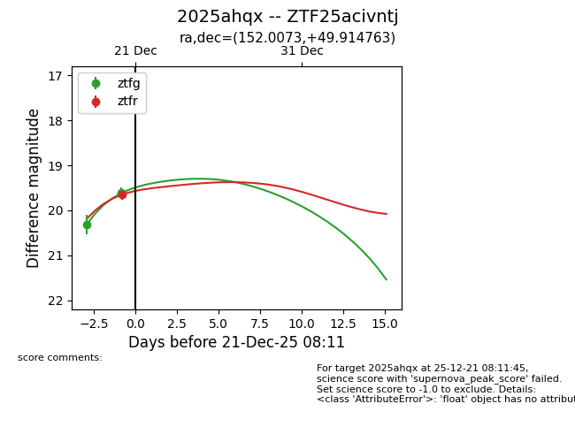
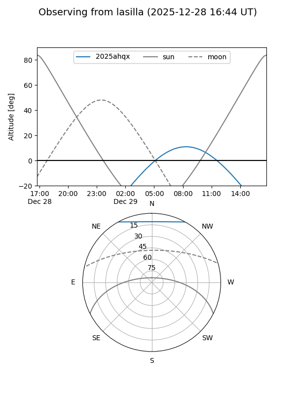
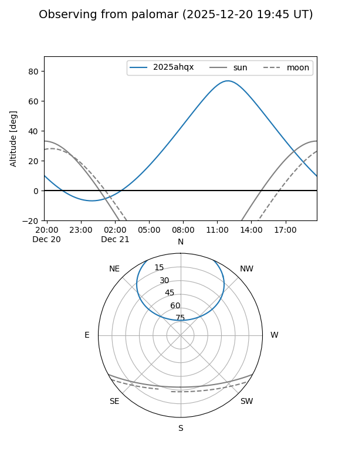
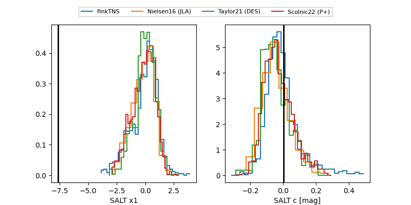

2025ahqx
Target 2025ahqx at 2025-12-21 06:03
Aliases and brokers:
FINK: fink-portal.org/ZTF25acivntj
Lasair: lasair-ztf.lsst.ac.uk/objects/ZTF25acivntj
ALeRCE: alerce.online/object/ZTF25acivntj
TNS: wis-tns.org/object/2025ahqx
YSE: ziggy.ucolick.org/yse/transient_detail/2025ahqx
alt names
ZTF25acivntj (ztf,fink_ztf)
2025ahqx (tns,yse)
Coordinates:
equatorial (ra, dec) = 152.0073,+49.91476
equatorial (HMS+DMS) = 10:08:01.75,+49:54:53.15
galactic (l, b) = (165.4837,+51.47627)
Flags:
Photometry:
last ztfg=19.63, ztfr=19.65
3 ztfg, 1 ztfr detections
Lightcurve

Visibility


Additional plots
